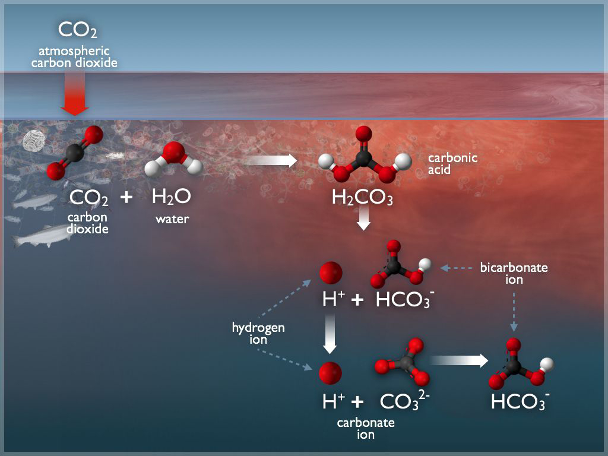
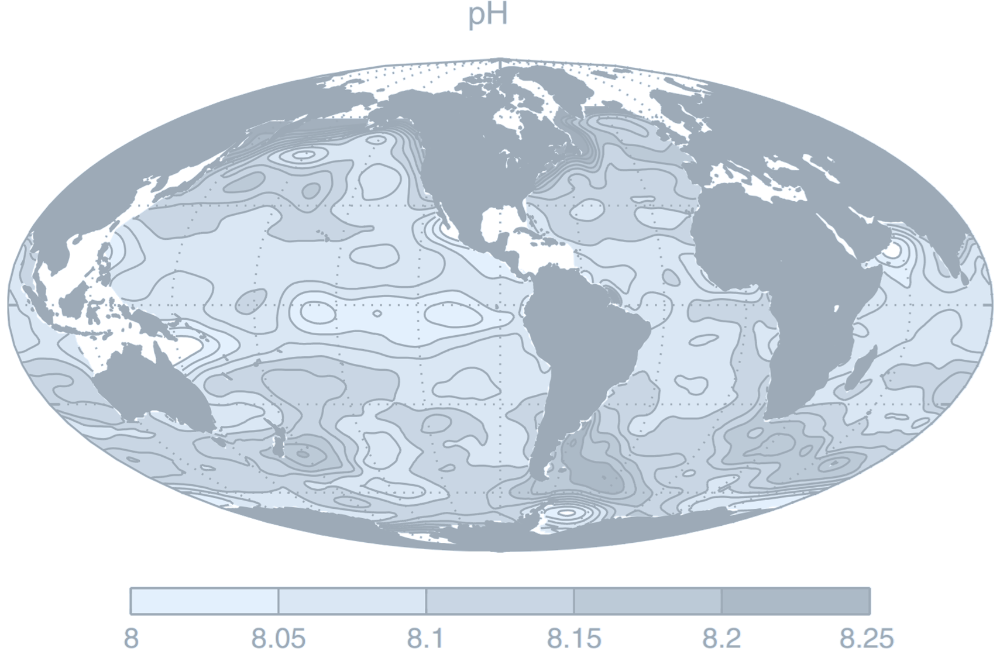
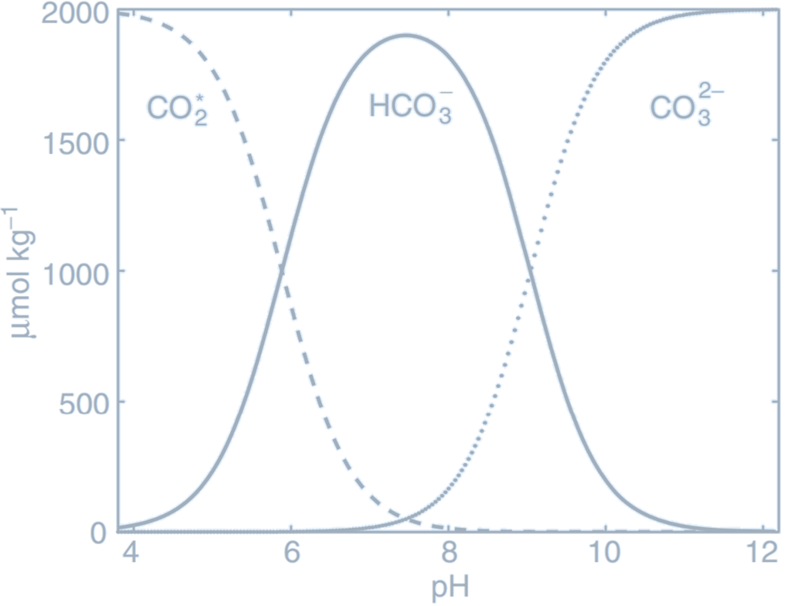
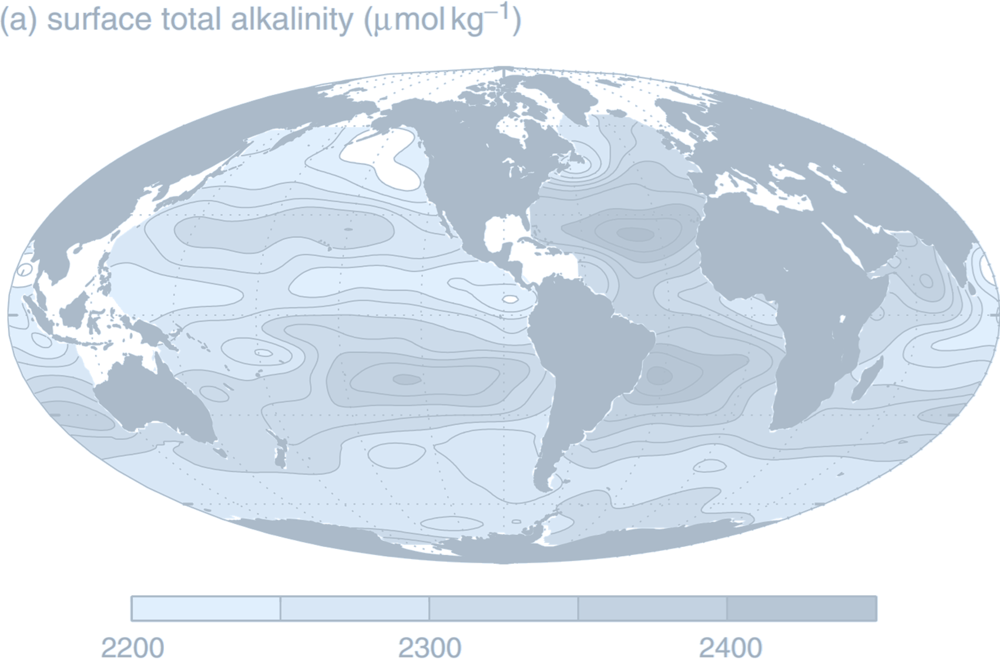
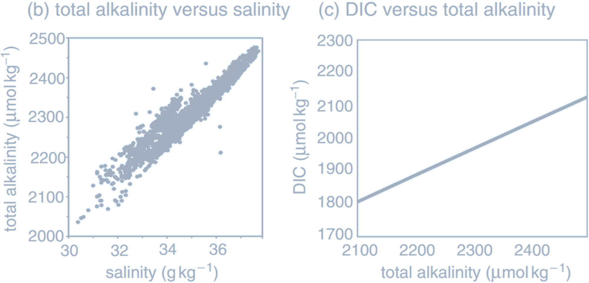

Lecture 5 – Carbon and Plankton
The carbon cycle plays an important role in the Earth’s climate system, with atmospheric carbon dioxide increasing radiative heating of the Earth’s surface. The exchange of carbon between atmosphere, ocean, and terrestrial reservoirs determines the amount of carbon dioxide in the atmosphere. The ocean stores about 60 times as much carbon as the atmosphere, with fifteen per cent or more of the atmospheric inventory passing into and out of the ocean annually. While surface exchanges are rapid, the deeper ocean takes thousands of years to equilibrate due to ocean overturning, and exchanges with sedimentary rocks occur over even longer timescales. Changes in ocean–atmosphere carbon partitioning contribute to glacial–interglacial cycles, amplifying climate perturbations. (A prime example of carbonate chemistry at an (air/water) interface: the ocean surface. The ocean is the largest sink for the greenhouse gas, carbon dioxide ($\mathrm{CO_2}$). Atmospheric carbon dioxide combines with water to form carbonic acid ($\mathrm{H_2CO_3}$), which then forms carbonate ($\mathrm{CO_3^{2-}}$) and bicarbonate ($\mathrm{HCO_3^-}$) ions. From there, carbonate ions can react with dissolved calcium or magnesium ions to form limestone or other minerals, where carbon can become sequestered.
Credit: NOAA Pacific Marine Environmental Laboratory (PMEL) Carbon Program.)
Carbon dioxide dissolves in seawater and the aqueous form, $\text{CO}_2^{\text{aq}}$, reacts with water to form carbonic acid, $\text{H}_2\text{CO}_3$. These species,
$$
[\text{CO}_2^*] = [\text{CO}_2^{\text{aq}}] + [\text{H}_2\text{CO}_3]
$$
are referred to as dissolved CO$_2$, where square brackets denote concentrations in seawater in terms of the amount per unit mass (µmol kg$^{-1}$).
Molecules of CO$_2$ continually pass across the air–sea interface and there is a flux of the gas (mol cm$^{-2}$ s$^{-1}$) both into and out of the water. When the flux in each direction is of identical magnitude, the air and water reservoirs of CO$_2$ are in equilibrium.
Solubility of Carbon Dioxide
Definitions for soluble gases $c$:- The mixing ratio of a gas in air, $X_c$, is the number of moles of the gas per mole of air. This ratio is dimensionless and, for carbon dioxide, often expressed as parts per million by volume (ppmv).
- The concentration of the gas in air can be defined either as the number of moles per unit volume, $\{c_a\}$ (mol m$^{-3}$) or the number of moles per unit mass, $[c_a]$ (mol kg$^{-1}$), where $\{c_a\} = [c_a] \rho_a$ and $\rho_a$ is the density of air at local temperature and pressure. The concentration is related to the mixing ratio by $ \{c_a\} = \frac{X_c p_a}{M_a}, $ where $M_a$ is the mean molecular mass per unit mole of air (kg mol$^{-1}$)
- The partial pressure, $p_c^{\text{at}}$, of the gas in air is the contribution of that gas constituent to the total atmospheric pressure, $p$, given by $p_c = X_c p$, and, for carbon dioxide, is often expressed in terms of micro-atmospheres (µatm).
- The fugacity, $f_c^{\text{at}}$ (µatm), is an effective partial pressure, corrected to account for the non-ideal nature of real gases; for carbon dioxide the correction is typically $< 1\%$.
- The concentration of the dissolved gas in water is either expressed per unit volume, $\{c\}$ (mol m$^{-3}$), or unit mass, $[c]$ (mol kg$^{-1}$), where $\{c\} = [c] \rho_w$ and $\rho_w$ is the density of water at the given pressure, temperature and salinity.
- The solubility, $K_0$, quantifies the ratio of the concentration of the dissolved gas in seawater and the partial pressure in the air when they are in equilibrium: $$ K_0^c \equiv \frac{[c]}{p_c} $$
(Schematic view of a simple closed vessel which contains seawater and an airspace above. Molecules of all soluble gases (filled and open circles), continually pass across the air–water interface in both directions. Filled circles represent a soluble gas, $c$, which has concentration in water $[c]$ ($\mu \text{mol} \, \text{kg}^{-1}$) and a partial pressure in the airspace $p_c$ ($\mu \text{atm}$).
Credit: Williams RG, Follows MJ 2011. Ocean Dynamics and the Carbon Cycle: Principles and Mechanisms.)
The greater the abundance of molecules of $c$ in the air, the greater the likelihood of one crossing into the water. Thus, the flux into the water is proportional to the partial pressure, $p_c$,
$$
\text{Flux in} = K_{\text{in}} p_c,
$$
and the flux out of the water is proportional to the dissolved concentration $[c]$,
$$
\text{Flux out} = -K_{\text{out}} [c],
$$
where $K_{\text{in}}$ and $K_{\text{out}}$ are constants of proportionality (with different units). At equilibrium, the flux in must exactly balance the flux out, and $p_c$ and $[c]$ are unchanging. In this case,
$$
\frac{[c]}{p_c} = \frac{K_{\text{in}}}{K_{\text{out}}} = K_0^c,
$$
where $K_0^c$ (mol kg$^{-1}$ atm$^{-1}$) is the solubility for a general gas $c$; we will use $K_0$ to denote the solubility of CO$_2$. The solubility reflects the relative efficiency with which molecules pass into and out of the water, and varies with environmental factors, including temperature and salinity.
- The kinetic energy of molecules in solution increases at higher temperatures and, thus, dissolved gas molecules are more likely to have sufficient energy to cross the air–sea interface. Hence, the solubility of a dissolved gas decreases with increasing temperature.
(a. The annual-mean difference in surface ocean and lower-atmosphere partial pressure of carbon dioxide,
$
\Delta p\mathrm{CO}_2 = p\mathrm{CO}_2 - p\mathrm{CO}_2^{\text{at}} \quad (\mu \text{atm})
$
. There is ocean uptake of CO$_2$ (light shading) over parts of the high latitudes where the partial pressure in the atmosphere is greater than in the ocean. Conversely, there is ocean outgassing (dark shading) in the tropics and possibly over parts of the Southern Ocean. This climatology represents a large compilation of surface ocean observations normalized to reference year 1995 (non-El Niño conditions) and mapped onto a grid of $4^\circ \times 5^\circ$; white regions around continents are areas with no ocean data due to the coarse-grained gridding.
b. Observed changes in surface ocean (0–20 m) $p\mathrm{CO}_2$ at the Hawaii Ocean Time-Series station and atmospheric $p\mathrm{CO}_2$ observed at Mauna Loa, Hawaii. Surface ocean $p\mathrm{CO}_2$ follows the rise in atmospheric $p\mathrm{CO}_2$ due to air–sea exchange. For this region, surface ocean $p\mathrm{CO}_2$ is always lower than in the atmosphere, driven away from a local equilibrium by ocean circulation and biological activity, and so there is a local ocean uptake of CO$_2$ (ocean data from Dore, 2009; atmospheric data from NOAA/ESRL).
Credit: Williams RG, Follows MJ 2011. Ocean Dynamics and the Carbon Cycle: Principles and Mechanisms.)
- If the effective partial pressure, $p\mathrm{CO}_2$, in seawater is greater than the partial pressure in the overlying atmosphere, $p\mathrm{CO}_2^{\text{at}}$, CO$_2$ outgasses from the ocean: gas molecules are statistically more likely to pass out of the water than into it.
- If the surface seawater partial pressure is lower than that of the overlying atmosphere, there is a net flux of CO$_2$ into the ocean.
The atmospheric partial pressure, $p\mathrm{CO}_2^{\text{at}}$, is relatively homogeneous, so that the air–sea flux of CO$_2$ is controlled by regional and seasonal variations in $p\mathrm{CO}_2$, which in turn depend upon the variations in $[ \mathrm{CO}_2^* ]$ and $K_0$.
Dissolved carbon dioxide, CO$_2^*$, reacts with water to form bicarbonate ions, HCO$_3^-$, which in turn dissociate to form carbonate ions, CO$_3^{2-}$: $$ \text{CO}_2^* + \text{H}_2\text{O} \rightleftharpoons \text{HCO}_3^- + \text{H}^+ $$ $$ \text{HCO}_3^- \rightleftharpoons \text{CO}_3^{2-} + \text{H}^+ $$ An excess of hydrogen means a liquid is an ACID. A lack of hydrogen leads to a BASE. 
(Global surface distribution of pH:
$
\text{pH} = -\log_{10}([\text{H}^+])
$
where $[\text{H}^+]$ is hydrogen ion concentration, determined assuming thermodynamic equilibrium between the components based on climatological DIC and alkalinity, and using annual-mean surface climatologies of temperature, salinity, phosphate, silicic acid.
Credit: Williams RG, Follows MJ 2011. Ocean Dynamics and the Carbon Cycle: Principles and Mechanisms.)
The acidification of sea water will change the way marine ecosystems work. Calcareous organisms and corals are particularly sensitive. These organisms build their shells of calcium carbonate, and acidification of water reduces the number of carbonate ions that is available for this. If sea water becomes excessively acidic, it may even start dissolving the calcareous shells of organisms.

(A pteropod shell is shown dissolving over time in seawater with a lower pH. When carbon dioxide is absorbed by the ocean from the atmosphere, the chemistry of the seawater is changed. Credit: NOAA Pacific Marine Environmental Laboratory (PMEL) Carbon Program.)
The Buffer Effect
The abundance of negatively charged carbonate and bicarbonate ions causes seawater to have a strong negative feedback, or buffering, against changes in hydrogen ion concentration. If an acid is added to seawater, $[\text{H}^+]$ instantaneously increases with the consequence of driving reactions $ \text{CO}_2^* + \text{H}_2\text{O} \rightleftharpoons \text{HCO}_3^- + \text{H}^+ $ and $ \text{HCO}_3^- \rightleftharpoons \text{CO}_3^{2-} + \text{H}^+ $ to the left, rapidly consuming the additional hydrogen ions again. (The Bjerrum plot reveals the partitioning of carbonate species as a function of pH. Dissolved inorganic carbon, DIC, is partitioned between CO$_2^*$ (dashed line), HCO$_3^-$ (full line), and CO$_3^{2-}$ (dotted line). Lower pH indicates a higher $[\text{H}^+]$,
pushing reactions $\text{CO}_2^* + \text{H}_2\text{O} \rightleftharpoons \text{HCO}_3^- + \text{H}^+ $ and $\text{HCO}_3^- \rightleftharpoons \text{CO}_3^{2-} + \text{H}^+ $ to the left, consuming CO$_3^{2-}$ and favouring CO$_2^*$. For this plot, the carbonate system was solved at fixed $T$, $S$, $A_T$, and DIC, while varying pH.
Credit: Williams RG, Follows MJ 2011. Ocean Dynamics and the Carbon Cycle: Principles and Mechanisms.)
At pH close to the modern surface ocean value of $\text{pH} \approx 8.1$, most of the dissolved inorganic carbon (DIC) is in the form of $\text{HCO}_3^-$.
At low pH, most of the DIC is instead held as $\text{CO}_2^*$, since the high concentration of hydrogen ions $[\text{H}^+]$ pushes reactions to the left, consuming carbonate ions $\text{CO}_3^{2-}$.
Conversely, at high pH, there is low $[\text{H}^+]$, leading to $\text{CO}_3^{2-}$ being more abundant.
Alkalinity
 ((a) Annual-mean surface map of total alkalinity (µmol kg$^{-1}$), together with
(b) total alkalinity versus salinity (g kg$^{-1}$) in the uppermost 25 m of the ocean from data, and
(c) the equilibrium relationship of DIC (µmol kg$^{-1}$) to total alkalinity $A_T$ with
$
\text{pCO}_2 = 278 \, \mu\text{atm}, T = 20^\circ \text{C}, \text{ and } S = 34.5 \, \text{g kg}^{-1}.
$
Credit: Williams RG, Follows MJ 2011. Ocean Dynamics and the Carbon Cycle: Principles and Mechanisms.)
Air–Sea Exchange of Carbon Dioxide
Air–Sea Equilibrium
| Variable | Air-Sea CO₂ Exchange (e.g., Ingassing) |
Photosynthesis | Respiration | Organic Matter Decomposition |
Calcium Carbonate Dissolution |
Calcium Carbonate Sedimentation |
|---|---|---|---|---|---|---|
| pH | CO₂ ↑ → pH ↓ | ↑ | ↓ | ↓ | ↑ | ↓ |
| pCO₂ | ↑ | ↓ | ↑ | ↑ | ↓ | ↑ |
| TCO₂ | ↑ | ↓ | ↑ | ↑ | ↑ | ↓ |
| TAlk | ↑ | ↓ | ↑ | ↑ | ↑ | ↓ |